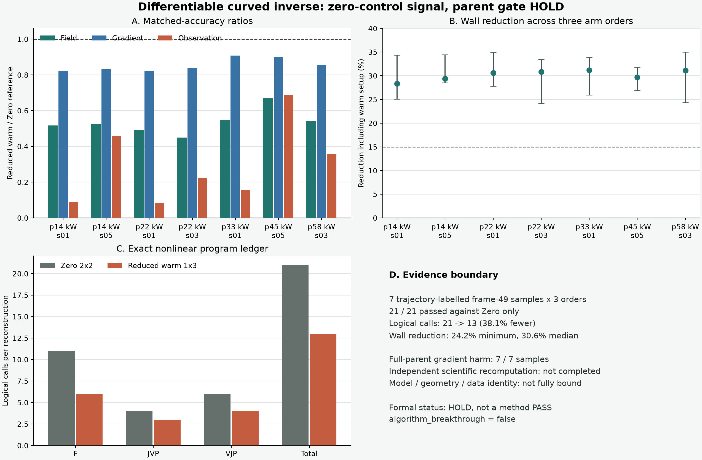

{kind=link}
高分辨率 rho 场
读取已开放 PoolFire 轨迹的 frame 49，ROI 为 32×32×64，逐帧去常数规约。
固定的 Observable Reduced Warm 不再接廉价直线矩阵，而是进入随当前三维场改变光线路径的
F(x) / J(x)v / J(x)^*w。7 个轨迹标签的 frame 49、3 种执行顺序共
21 次执行都胜过 Zero，但 Reduced 的 gradient error 在 7/7 个样本上弱于 Full Parent。
独立审计后，正式状态由 PASS 降为 HOLD。
每条轨迹都要求 candidate final 同时满足 field、gradient、observation 三项 relative-L2 不高于自己的 Zero reference；这项门 21/21 通过。但更强的 Full Parent 对照没有进入原主门，独立审计发现 Reduced 的 gradient error 在 7/7 个样本上更高。 下图已经按审计结论标为 HOLD。

读取已开放 PoolFire 轨迹的 frame 49，ROI 为 32×32×64，逐帧去常数规约。
NumPy v25 使用 192 个积分步，光线随当前真值场梯度弯曲，生成 2072 维观测。
部署可见 observation 经固定 proposal、精确 lift 和低秩 residual recovery，得到粗场后上采样。
PyTorch 逆模型用 96 个积分步；每次 outer 在当前场重新计算 F/J/J(x)^*。
Reduced 1×3 通过 Zero 2×2 门，却未保持 Full Parent 1×3 的 gradient 品质。
三项比值为 Reduced Warm 1×3 / Zero 2×2；Parent gradient 列是 Reduced - Full Parent，正数表示 Reduced 更差。不能把 proxy 误差比解释成真实实验绝对精度。
| 样本 | 角色 | field / Zero | gradient / Zero | observation / Zero | gradient - Parent | wall 中位降幅 | 判决 |
|---|---|---|---|---|---|---|---|
| 读取脱敏结果中… | |||||||
场依赖曲线 forward 已进入逆问题；相对 Zero 的三项门 21/21 通过；调用从 21 降到 13；同进程 wall 都下降。
Reduced 相对 Full Parent 在 7/7 个样本上有 gradient harm；加深到 1×4 后仍为 7/7，说明不是内层迭代不足。
外部模型/几何/数据身份未完整绑定，指标仅独立聚合而非独立复算；也没有 fresh/RSS、sealed external 或真实 BOST。
CVPR 2024 RIT neural fields 已用可微曲线追迹重建折射率场。
JCP 2023 inverse scattering 已让网络预测未知量，再交给 Gauss-Newton 精修。
同参数量的 Direct-Field 网络从相同 observation/geometry 直接输出 field，再接同一 GN-CGLS；否则不能证明 dual + J(x)^* lift 有独立价值。